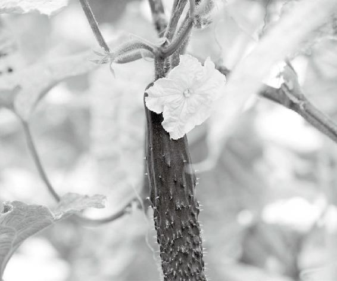
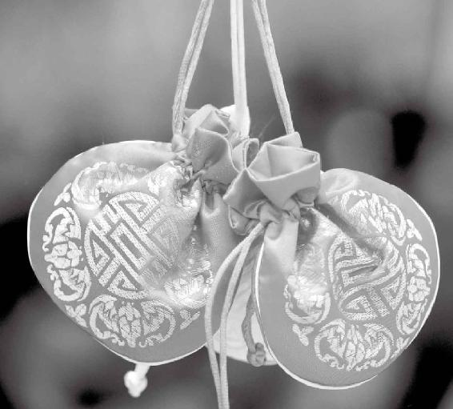
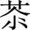
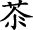
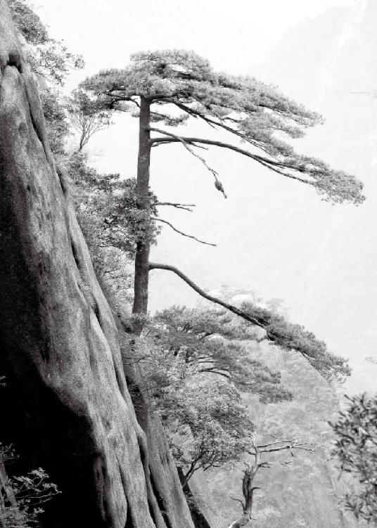

生活环境对每个人身体健康的影响非常大，我们得意识到这种影响，有好的我们去发扬，有坏的我们就给它屏蔽掉。这样，我们既能跟天地相处得和谐自然，又能过上一种不费劲却健康快乐的生活。
经文：
黄帝问曰：医之治病也，一病而治各不同，皆愈，何也？
歧伯对曰：地势使然也。
人要活得顺，离不开天时、地利
梁冬：现在，我们要学习《黄帝内经·素问》第十二篇——《异法方宜论》。为什么要先讲这一篇呢？中间不是还有其他章节吗？请徐老师解释一下。
徐文兵：古人经常说，要上知天文，下知地理，中知人和。中医看病，其实就是把人放在一个大的区间里看，也就是我们常说的空间和时间。它强调的是：人既然是天地的产物，就跟天时和地利有密不可分的关系。
一个人能健康地生活，就是因为很好地处理了与天时、地利的关系。而人要是得了病呢？那就是说他不会御神，即“不时御神”！一旦没有踩着点儿走，没有按照四季的变化和昼夜的变化去顺应，人就会生病。
一个人能健康地生活，就是因为很好地处理了与天时、地利的关系。
第一篇《上古天真论》里，我们讲了人身体变化的规律。比如说，女子七年一个周期，男子八年一个周期，这个周期其实就是天时。《黄帝内经》讲“女子七岁肾气盛……十四岁天癸至”，也就是说，天时走到那个点儿了，你就该有相应的变化了。如果这个周期乱了，我们就叫乱七八糟。
天时走到那个点儿了，你就该有相应的变化了。如果这个周期乱了，我们就叫乱七八糟。
成语经常说的“乱七八糟”其实就这么一回事儿。“乱七”，就是说女子那个七年的周期乱了，没到十四岁来例假了，到了四十九岁例假还不断，或者提前闭经了。男子呢，身体不好肯定就是“八糟”了，因为男子是八年一个周期。
如何让自己“眼神天真、有活力”
徐文兵：《上古天真论》里指出了做人的四大境界，让我们这些普通人朝这个方向努力。第二篇讲的是《四气调神大论》，告诉大家怎么按照四季节气去调整自己的生活节奏和周期。
第四篇我们讲的是《金匮真言论》：“天有八风，经有五风。”意思是说，天气的变化对不同地域的人会产生相应的影响；另外，我们还特别讲了中医“五行”的观念，金、木、水、火、土五种元素对人的脏腑功能变化会有什么影响；还有以前讲的从平旦到日中等昼夜的变化……这些其实讲的都是天时。
大家都知道要日出而作、日落而息，春生、夏长、秋收、冬藏，这就是最简单的顺应天时。
日出而作、日落而息，春生、夏长、秋收、冬藏，这就是最简单的顺应天时。
前阵子过节，我在乡下跟一帮八十多岁的老头、老太太待了五六天。在乡下最大的感觉是什么？一到晚上七点，日落，吃完晚饭，人家老头、老太太都睡了，我也跟着困。
梁冬：我前些日子到山上修道去了，也是天一黑就困，这是什么原因呢？
徐文兵：一个是没有灯，一个是没有那种躁气，就是大城市形成的那种让人浮躁、夜不能寐的那种气。在乡下晚上睡得早，第二天四五点钟跟着那帮老头、老太太起来，没想到人家八十多岁了，居然还下地干活！
最有意思的就是，我们一块去泡温泉，唱卡拉OK。本来觉得，那里面我还算倒数第二小，还有一个三十岁的人。可我们跟这帮老头、老太太坐在一块儿，最大的八十七岁，最小的也七十八岁，看看人家干吗？唱卡拉OK！
我心想，卡拉OK应该是年轻人唱，没想到人家八十多岁了，上去就唱！有个老太太都八十三了，唱两句觉着不过瘾，又拿出口琴吹。我跟他们在一块，觉得真是处天地之和，那种眼神的天真，那种生命的活力，哎，我就感觉人家就是《上古天真论》里说的那些人！
第二，乡下的水好。
梁冬：为什么这些人能健康长寿呢？
徐文兵：我分析有这么几点：第一，人家太阳落山就睡了，早晨起得也早，所以自然那点儿人家踩得好。
第三，我觉得在乡下吃的那些食物、蔬菜特别好。
第二，乡下的水好。我在城市里按照茶艺老师说的方法泡茶，会买山泉水来用。但我觉得乡下那个水，比我买的山泉水都好喝。而且，人家那是活水，我们买的水放在桶里面，是死水。
“眼神天真，有活力”的秘密。
第三，我觉得在乡下吃的那些食物、蔬菜特别好。人家院子前后都是自己种的菜，到吃午饭了，摘个茄子，弄个黄瓜，洗个西红柿，切棵菜，一做，很新鲜，很好吃。
第一，人家太阳落山就睡了，早晨起得也早，所以自然那点儿人家踩得好。
另外，人家入秋以后吃什么菜？绝对不是我们春天、夏天吃的那些菜，而是我们在《金匮真言论》里说的“其臭腐”。他们用的是自己做的酱，头一天就把新鲜的黄瓜、茄子、辣椒埋在那酱里面，过两三天，甚至过一天后拿出来，就变成腌菜了。秋天就切那个菜吃，哎哟，吃那菜我吃得特别香。到了秋天嘛，就得吃点儿酸的。而到了冬天，吃点发酵的、酸腐的东西胃才舒服。
最后，不得不说说他们的心态。这些人从不把自己当成老人，“我是垂垂老矣，行将就木，成棺材瓤子了。”相反，人家觉得自己很年轻，该干什么干什么。所以，我这个假期跟一帮老头、老太太在一起，学习到的最可贵的精神就是——身体力行。也就是说，天时、地利对人的这种影响。
宇宙这么大，地球这么大，我们只是地球上的一个小“细菌”啊！整天想着自己吃这个药、喝那个药对身体好，却不想想，地球对我们影响多大！太阳对我们影响多大！

与自然和谐相处，就能获得生命的活力。
所以，这一次我们先讲居住的生活环境对每个人身体健康的影响。生活环境对人的身体健康影响非常大，我们得意识到这种影响，有好的我们去发扬，有坏的我们就给它屏蔽掉。这样，我们既能跟天地相处得和谐自然，又能过上一种不费劲却健康快乐的生活。
生活环境对人的身体健康影响非常大，我们得意识到这种影响，有好的我们去发扬，有坏的我们就给它屏蔽掉。这样，我们既能跟天地相处得和谐自然，又能过上一种不费劲却健康快乐的生活。
把《异法方宜论》挪到我们讲完天年后来讲，我觉得正逢其时。
出生地影响你一生的体质
一方水土养一方人
梁冬：请徐老师为《异法方宜论》破一下题吧：什么叫做“异法”，什么叫做“方宜”？
徐文兵：“异法”的意思就是：治疗方法不同。
这一篇中，黄帝问岐伯，有的时候我看你治病，“一病而治，治不同”，很多人得的是同样的病，你却用不同的方法去治疗，但是“皆愈”！结果是一样的，为什么？歧伯就说：“地域使然，地势使然！” 因为这几个得了同样病的人来自不同的地方。
俗话说，一方水土养一方人，不同地域会对这里人的体质和健康，乃至心态造成不同的影响。作为医生来讲，治病就得“因势利导”，根据病人所来自的地域，分析他的体质，给他以适合的治疗方法。这叫什么？就是“方宜”！
一方水土养一方人，不同地域会对这里人的体质和健康，乃至心态造成不同的影响。
而医生使用的治疗方法具体指什么呢？我们指的是大的方法。法可以分成什么？内治、外治。药也有内服药和外用药。所以说，这种法呢，其实是指一种治疗的手段。
在《异法方宜论》里，根据不同地域、不同体质的人具体给出了不同的方法，比如说用砭石、用针刺、用艾灸，还有内服中药、导引、按跷等方法。中医到底是怎么给人治病的？现在的人看到中医在萎缩、退化，一说治病就是开方子，其实中医用的方法有很多，甚至还包括佩戴香囊的方法、祝由的方法。
但是呢，这些方法都有一个基本的指导原则，就是最后让医生选择这种方法的原则，也就是“道”。古人说“道、法、术、器”，治病的方向是“道”，至于采取什么样的方法？那就看具体的操作了，这就涉及我们中医看病时的问诊。
中医用的方法有很多，甚至还包括佩戴香囊的方法、祝由的方法。

佩戴香囊也是中医治疗方法的一种。
为什么说“同姓最好不要结婚”
梁冬：同姓最好不要结婚，为什么呢？
徐文兵：第一，尊姓大名。姓名中的“姓”代表什么？现在很多人都认为代表父亲，但你看姓怎么写？“女”“生”，最早的姓不是父姓，是母姓。人类社会是慢慢在进化的，但最早都有个共同的时期叫母系社会。
姓怎么写？“女”“生”，最早的姓不是父姓，是母姓。
为什么叫母系社会？这其实就是我说的那个“巫”掌权的时代，女人当家作主的时代。当时人们是一种什么状态呢？只知其母不知其父。像现在泸沽湖那个地方还保留着这种遗风，他们对母亲的这些——我们叫性伴或者男友，都叫舅舅，也许某一个人就是他爹，但是他也不知道谁是他爹。
如果想区别一个人怎么办呢？只能问母亲是谁，姓指的是母姓。后来过渡到父系社会，才把这个姓变成了父姓，这时才知道父亲是固定的。
梁冬：男人篡班夺权了。
徐文兵：对，“巫”慢慢地功能退化，而那个“觋（xí，男巫师）”慢慢篡班夺权了。这时姓代表的是什么？是血亲。比如说，我们说有些人得了遗传病，有的是隔代遗传，有的是显性遗传，有的是隐性遗传，其实通过这个姓来解释的话，就很简单了，说的就是血亲和谱系的关系。古人讲“同姓相婚，其生不蕃”，意思是什么？如果你们俩血缘比较近，结婚生了孩子，很可能就生出几个呆傻痴

（nié）的孩子。古人讲“同姓相婚，其生不蕃”，意思是什么？如果你们俩血缘比较近，结婚生了孩子，很可能就生出几个呆傻痴 
如果男子跟自己的表姊妹或堂姊妹结婚的话，像《红楼梦》里那些表亲或者堂亲，就很容易出现遗传病。所以，古代人说同姓最好不要结婚，因为你们的血缘关系很有可能离得太近了。
为什么中医看病先问“尊姓大名”
医生看病，第一要问姓，第二呢，就要问名。古代人不仅有名，而且有字。名者，命也。你生在什么样的家庭，你没法儿自个儿选择。所以一问你的名，噢，别人就对你父母的这种教养程度、水平以及父母对你的期许有了大致了解。
名是父母给起的，字则是自己给取的。字一般是求学、弱冠之时，自己在名的基础上作的推演、演绎，或者干脆跟名儿没关系，代表本人的一个志向。所以通过字，医生就能对病人心里想的有所了解。
名是父母给起的，字则是自己给取的。字一般是求学，弱冠之时，自己在名的基础上作的推演、演绎，或者干脆跟名儿没关系，代表本人的一个志向。所以通过字，医生就能对病人心里想的有所了解。
梁冬：所以说“字者，志也”嘛。
徐文兵：我们说看病先问您“尊姓大名”，讲究的就是先问姓，再问名、问字。在这之后，还有一个特别重要的问题，就是问“何方人氏”，看您是哪儿、哪个旮旯（gā lá）①的。
我们经常说“姓氏”，可大家都把它归到了“姓”，忘了那个“氏”是什么意思了。这里的“氏”没有血亲的含义，只能说咱们是从同一个地方来的。
我们常说，对人要“知根知底”，那个“底”字，部首之下就是“氏”字加一“点”。这又有什么意义呢？就是说，人所有的东西，跟他生长的生活环境有很大的关系。
我记得小时候文革那会儿，中央宣读中央委员名单，都要说一句“以下按姓氏笔画为序”。可一百多个人的名单，你怎么排呀？当然，前面这个最高领导人，主席、副主席不需要姓氏笔画，那是有顺序的，不能因为你笔画多，你就排在第一位，对吧？而后面的这些中央委员，就是按姓氏笔画来排的。
等我长大以后，我就认为这样排是有问题的，因为它是按“姓”的笔画来排序，不是按“氏”的笔画。
“姓”和“氏”区别在哪儿？氏，我刚才说了，一方水土养一方人，在这方水土生活的人，就会有一种特定的饮食、风俗习惯，从而造就了相对于其他地方的人不同的健康状态、心理状态和性格状态。
我们经常说“穷山恶水出刁民”，还有句话叫“无湘不成军”。这是什么？就是说一方水土造就了这方人。所以，我的病人找我看病，我都有个基本的问诊记录。一问出生地，您出生在哪儿？二问您父母是什么情况，在哪生活什么的。通过这个过程，就能了解这个人大概的饮食习惯，或者性格、生活习惯。这样的话，有助于医生了解病人的身体情况，从而对症用药。
比如说，火神派经常要用“附子”。来了一个四川江油的病人，人家炖肉都放附子，你却在那儿给人开药：附子10克、15克。这不瞎扯吗？人家早已产生耐药性。
梁冬：此话真是有道理。
徐文兵：说到这个“氏”，你再看一个词“根底”。我们常说，对人要“知根知底”，那个“底”字，部首之下就是“氏”字加一“点”。这有什么意义呢？就是说，人所有的东西，跟他生长的生活环境有很大的关系。你想对他有深刻的了解，一定要知道他的“氏”，原产地，made in where。
梁冬：原产地，讲得太对了！插一句，我生活中就没发现过一个笨蛋湖南人，我见过的所有湖南人都是聪明的，这真是奇怪了。
徐文兵：“惟楚有才，于斯为盛”。
“惟楚有才，于斯为盛”。
梁冬：嗯，湘女多情……情更长！
姓氏的“氏”有三个含义
徐文兵：我再补充一个问题，我们讲到姓氏的“氏”到底是什么意思？“氏”就是说“何方人氏”，你从哪里来，但是“氏”还有另外两个意思，一是职业。
比如说“燧人氏”，就是指钻火的人；“神农氏”，指的是种庄稼的人。黄帝叫什么氏呢？叫“有熊氏”！
梁冬：“有熊氏”，我以前就不明白，什么叫“有熊氏”啊？
徐文兵：我们的祖先叫“伏羲氏”，“伏羲”什么意思？指的是一群人，一群狩猎的人！他们降服牲口，把野兽“啪啪啪地干掉”，这种行为我们称之为狩猎。
我们的祖先叫“伏羲氏”，“伏羲”什么意思？指的是一群人，一群狩猎的人！
当年黄帝跟蚩尤打仗的时候，动用的是“特种部队”，让老虎、大象、豹子去跟蚩尤打。这时，他已经不再是见到野兽就打一个吃一个了，而是拿回家去驯养，为自己所用。“有熊氏”指的就是畜牧的人。
梁冬：对啊，《封神演义》里面讲的，都是玩这种战术，把野猪变成家猪，野鸡变成家鸡。
徐文兵： 所以说，家猪叫豚，野猪叫猪。羊是最温顺的动物，人类最早驯化的是羊。像西藏的藏羚羊、山上的黄羊都是野羊，慢慢地，我们的祖先就把它驯养成家羊，随时取，随时用。
梁冬：除此之外，黄帝还有一个“氏”，叫“轩辕氏”，这又是什么意思？
徐文兵：“轩辕氏”就是指造车、驾车的人。古书上记载，黄帝是造指南车的，这也是代表他的职业。所以，“氏”的另外一个含义就是你从事的职业。而“轩辕”这个姓，说的就是你所属的家族。
你看北京人现在说的“风筝哈”“馄饨侯”“爆肚王”，也说的是姓氏，只是前面是氏，后面才是姓。
比如说“风筝哈”，职业就是做风筝的，而他的姓是什么呢？“哈”！“馄饨侯”也是一样的用法，它的意思是：我是做馄饨的，我姓侯。
梁冬：西方人不都这样么？
徐文兵：再比如说，你叫我“徐大夫”，那么徐就是我的姓，大夫是我的职业，这就是姓氏的意思。对于中国的古文化，每个人都会用，但很少有人知道为什么。
“氏”还可以根据职业再作进一步的细化。再举个例子——毛主席，毛是他的姓，那主席是什么？就是他的“氏”。而毛主席以后呢，还有江主席、胡主席，工会主席也是主席。一说主席，人们就会联想到一大串儿人。
这里叫的“主席”，其实就是氏。所以，这就需要细化了，得加上姓才行。
再比如说，我们现在叫“王局”“李队”“张处”，什么意思？这也是在叫他的姓氏。前面是张，后面是处，姓张的处长，这就是进一步细化了。
在这里，我就算把这个“氏”给大家彻底交代清楚了。氏，一是指你从哪儿来的，二是指你从事什么职业，三是指你是什么职位。所以一说到“氏”，指的绝对不是一个人，而是一群人。
氏，一是指你从哪儿来的，二是指你从事什么职业，三是指你是什么职位。所以一说到“氏”，指的绝对不是一个人，而是一群人。
梁冬：简单的一个字，竟然包含了这么多的信息！
徐文兵：所以古书上说，“神农氏尝百草，一日遇七十毒，得茶而解”，其实，这绝对不是神农一个人在那儿尝，是神农氏，而这个氏可能延续了好几代人。
一个人出名了，会带着他整个家乡出名
姓氏还有个特点，就是人杰地灵！一个人出名了，他会带着他整个的家乡出名。
姓氏还有个特点，就是人杰地灵！一个人出名了，他会带着他整个的家乡出名。
现在我们一说起某个人，牛！然后叫他的名儿就会叫什么？称他的姓，再加上他的出生地。比如说“袁世凯”当了大总统，他的功过是非我们姑且不评价，可后人管他叫什么？袁项城，他是河南项城人。再比如说李鸿章，他是哪儿人？徽军首领嘛，李合肥！这一下把名人的姓和出生地都联系起来了。
梁冬：简直是当地的形象代言人嘛！
徐文兵：对，当地形象代言人！梁冬出名了，也会带动你的出生地。梁冬你是哪儿人？
梁冬：广东省新兴县人，叫梁新兴。
徐文兵：孙中山的名字，也跟他的家乡有关系。那个地方原来不叫中山县，孙中山出名以后，就把县城的名字改成中山了。现在还有志丹县、左权县，指的是当年刘志丹的故乡，左权牺牲的那个地方。这就是人杰地灵，因为人出名了，把这个地方的名气也给带动起来了。
梁冬：对，“张自忠路”看来也是这个来由。
徐文兵：这都是我们中华民族的一个传承，说的是地域对人的影响。
①旮旯：狭窄偏僻的地方。
健康的终极智慧是借势
民风彪悍，因为当地地域的能量强
徐文兵：上次我们说到了湘（湖南），俗话说“无湘不成军”，你知道湘西剿匪死了多少人吗？
梁冬：多少人？
徐文兵：这个事件发生在解放战争渡江战役之后，那架势真是摧枯拉朽，势如破竹。你看《开国大业》里毛主席说的：“淮海战役结束了，从此以后中国没有大的战事了，就是国民党正规军也不在话下了。”但是，这之后到哪儿受到磕绊了？就是湘西啊！
湘西剿匪，挺难打的。湘西是作家沈从文的老家，就是现在旅游胜地凤凰这一带。十大元帅谁从湘西出来的？贺龙，他特别能打仗！
当年湘西剿匪的是四野，四十七军在那儿打的。那儿的土匪神出鬼没，再加上当地民风彪悍，哪怕贺龙对当地地域非常熟悉，但打起来还是很费劲。你说这方水土养出来的这帮人，多厉害！
梁冬：民风彪悍，地域的能量该有多么强啊！
徐文兵：这个地方的能量强，一个是跟它的饮食有关，再一个就是受地势的影响。据说湘西那儿是“十万大军”在剿匪，可见山形地势对人的影响有多厉害！而到了“一马平川”的平原地区，你想当土匪都难，除非你挖地道。
这个地方的能量强，一个是跟它的饮食有关，再一个就是受地势的影响。
梁冬：所以平原地区的人都只能做风流才子佳人，谈谈情说说爱。
地势到底蕴含了怎样的能量
梁冬：好了，话说回来，为什么一种病有各种治疗方法，而且都能治得好呢？歧伯对曰“地势使然也”，是因为出产地不一样吗？
徐文兵：你看这个势力的“势”，上面一个“执”，下面一个“力”，“势”是一个什么样的东西呢？“势”啊，我们讲势气、势力，它们表现出来的东西都属阳。可实际上，“气”和“力”都是无形的，而这个“势”是什么？是蕴含在里面，蓄势待发还没发的那个东西。
梁冬：是啊，你看看，物理学上就叫作“动能”“势能”嘛！
徐文兵：我们说，这个人家里很有势力，不是说他领一帮穿黑衣服的人，戴着墨镜，拿一把斧子天天砍人。相反，说的他是拥有那种力量，要砍的时候能砍得了，你别招我！
“势”是一个什么样的东西呢？“势”啊，我们讲势气、势力，它们表现出来的东西都属阳。可实际上，“气”和“力”都是无形的，而这个“势”是什么？是蕴含在里面，蓄势待发还没发的那个东西。
所以，现在使用核武器都叫什么？蓄势。我有，但是我不用，引而不发。
我以前看过一个希腊神话，大概叫“达摩克利斯之剑②”。什么意思呢？处罚一个人时，就让他坐在那儿，然后用一根马鬃悬一把利剑在他头顶上。
梁冬：对着百会穴？真黑呀！
徐文兵：这个人不是叫“如坐针毡”，而是什么？他头上悬着一把蓄势待发，但是引而不发、摇摇欲坠的剑，所以这叫“千钧一发”。一千钧的东西吊在一根头发丝上，眼看就要往下砸，但是又没砸，那种状态就是一种“势”。
一千钧的东西吊在一根头发丝上，眼看就要往下砸，但是又没砸，那种状态就是一种“势”。
我们看山的状态，尖起的，凸起的，或者是一个巨石快要倒，但是又没倒，那个状态就叫“势”。古代把太监阉割，包括使用一些对女性的宫刑，就叫“去势”，去掉了。
梁冬：就是让你没有那种发力、发气的可能性了。
徐文兵：对。但是那种能量还是蓄积在那儿，对你是有影响的。
具体这个“势”的含义呢，我举两个字给大家说一下：一个是“危”，一个是“险”，这都是势。什么叫“危”呢？就是说人站在悬崖边儿上那个状态，叫“危”。什么叫“险”？本来一条平平道路上，却堆满了各种障碍，这就叫“险”。所以说，“危”和“险”不一样，这都是“地势使然”。
什么叫“危”呢？就是说人站在悬崖边儿上那个状态，叫“危”。什么叫“险”？本来一条平平道路上，却堆满了各种障碍，这就叫“险”。所以说，“危”和“险”不一样，这都是“地势使然”。
②达摩克利斯之剑：源自希腊神话，迪奥尼修斯国王请他的大臣达摩克利斯赴宴，命其坐在用一根马鬃悬挂的一把寒光闪闪的利剑下。意指令人处于一种危机状态。
中国“西高东低”的地势对我们身体有什么影响
徐文兵：古人说，上知天文，下知地理，我们起码对自己的地理该有个了解。我们中国的地势是什么状态？
古人说，上知天文，下知地理，我们起码对自己的地理该有个了解。
梁冬：西高，东低。
徐文兵：对了，西高。西北都偏高，东南都偏低。中华民族的发源—黄河和长江是两条母亲河，它们中间就是在东西之中、南北之中，相当于河南中原，波及到山西的河东地区，就是运城一带和陕西的一部分。
我们看一下中国的版图。大概在周朝的时候，中国的影响力就在中间这一块儿。南，没到云南；北，没到现在的东三省；但是从东呢，大概到了海边，也就是现在的这个冀东（秦皇岛或山东这一带）；西边呢，就到了青海、甘肃这一块儿，再往西呢，就是吐蕃，现在的西藏了。到了汉朝，还有了这个西域，张骞通西域。
所以，我们今天讲《异法方宜论》，就要首先对“异法方宜”这个地域有一个大概的了解。这里说的“中”，指的是现在河南这个地块儿。而从河南这一块儿往西北走，那是什么？黄土高原。
我老家是山西的，山西就比北京高出将近1000米。你看，从北京到大同，尽管距离就是382公里，但火车走得很慢。现在都提速了，还得走5个小时。
火车现在提速到每小时100多公里，应该两三个小时就到了，为什么还这么慢？大家都知道，通八达岭时，中国修的第一条铁路叫京张线，詹天佑修的。为什么青龙桥那儿又做成个“人”字线呢？就因为它那个坡儿太陡，火车拉不上去，只好先走一个拐弯儿。先走这边儿，然后再往上倒车，否则，一是容易动力不足，以前火车是烧煤嘛；二是容易翻车。
内蒙为什么光长草，不长树呢？还是“地势使然”。你看，地势既然会影响到了我们的植物，那么，就会影响到吃这种植物的动物，然后影响到人。
再来说说内蒙，它也是属于高原。在内蒙为什么光长草，不长树呢？还是“地势使然”。你看，地势既然会影响到了我们的植物，那么，就会影响到吃这种植物的动物，然后影响到人。
梁冬：一个“地势”居然还有这么多门道。所以说，我们为什么要听老师讲课，你觉得明白“地势使然”就是地方不一样的意思，但原来它背后还有那么多能量的不同。“地势”蓄积的就是一种能量。
去他乡定居，先考察那儿的环境是否合拍
徐文兵：再往西呢，你看到了青藏高原，本来挺高的吧，但是在青藏高原下边就窝下去一个盆了，就是我们现在的四川。
我从小特别喜欢看地图，我家专门有一个立体的地图，特别好用。一般平面地图它用等高线来标示，比如说这儿有个山，就在这儿画圈，最高点海拔多少。但是那种感觉呢，让人觉得不立体。
当然，这在很多军事家眼里那都是立体的，生动形象。但我觉得看这个不过瘾，就买了一个那种塑料压出来的立体地图，你一看就知道中国的地势情况了。
大兴安岭的东侧是松嫩平原，大兴安岭的西边就是内蒙了，内蒙的东蒙那里地势很高……再往下走，是河北、华北大平原，华北大平原太行山这面，那是黄土高原，然后你再看四川盆地，就洼下去了。
四川这个地方啊，在远古的时候原来是个大水库。夸张点说，就是个大海！它在那儿蓄了一大盆子水，里面没有人烟。大禹治水，从那儿凿开三峡以后，里边的水冲泄下来，然后慢慢地水没了，就变成了一个盆地。所以，人家四川人为什么爱吃辣，你得看看四川人生活在什么地方！
四川人为什么爱吃辣，你得看看四川人生活在什么地方！水很深火不热，但湿气很大，所以得吃辣椒、花椒来祛湿！
梁冬：水深火热呀！
徐文兵：水很深火不热，但湿气很大，所以得吃辣椒、花椒来祛湿！
而到了我们现在所谓的东南方，就是两条母亲河——黄河和长江带着泥沙冲积出来的平原，你看《内经》上是怎么说它的？地势卑下。它先冲出来一个湿地，然后慢慢地变成沼泽、盐碱地。多少年以后，它再演变成了腐殖层，就是有机物的堆积，这才变成了一个良田。
沧海桑田，多少年的变化才能出来，这就是地势使然。
沧海桑田，多少年的变化才能出来，这就是地势使然。
所以，我们要去他乡定居，最好先了解一下自己从小生长的环境，这样的话，才能更好地知道自己的体质，然后迁徙到新的环境后，才能更好地适应它。这就叫知天、知地、知人。
所以，我们要去他乡定居，最好先了解一下自己从小生长的环境，这样的话，才能更好地知道自己的体质，然后迁徙到新的环境后，才能更好地适应它。这就叫知天、知地、知人。
梁冬：而且，大家都可以先观察一下自己生活的小区，是吧？
比如，A3栋和A4栋比较高，也有地势，也会影响你的体质。这个东西呢，当然就说得比较细节化了。

不同的地势中蓄积着不同的能量与生机。